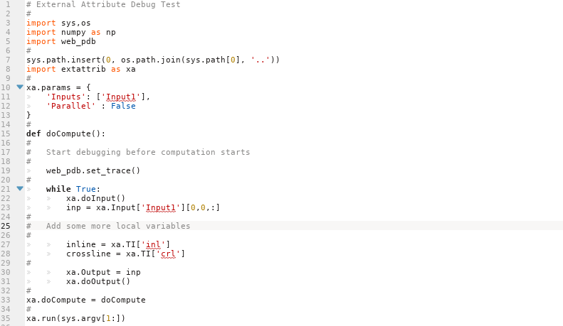

Introduction
Because the Python ExternalAttrib - External Attribute script is running in a process started by the OpendTect application most standard methods to examine the script as it runs, eg using the standard Python debugger pdb, are not available.
A solution is to use the Web-PDB Python module which allows the Python script to be debugged remotely in a web-browser.
Web-PDB Installation
Web-PDB is not included by default in most Python installations but it can be easily added using pip:
pip install web-pdb
Adding Web-PDB to a Script

Adding Web-PDB to a script is just a matter of importing the module as shown on line 5 and adding a call to web_pdb.set_trace() as shown on line 19. The web_pdb.set_trace() call acts like a breakpoint and can be inserted as many times as required.
For simplicity it is best to disable multi-threaded processing (add a Parallel: False line to the xa.params object) while debugging.
Debugging with Web-PDB

After adding Web-PDB to the ExternalAttrib - External Attribute script it will run to the first breakpoint where execution will be suspended and a web-UI opened at the default port 5555. Pointing a web browser at http://<your machine hostname or IP>:5555, eg http://127.0.0.1:5555, should show an interface for debugging as above.
The buttons provide control on the script execution, hover the mouse pointer over them to see tooltips for each. More complex pdb commands can be inserted in the entry at the bottom of the screen. Click the ? button for a list of useful pdb commands.
Web-PDB and Multi-threaded Processing
It is possible to use Web-PDB with a script that has multi-threaded processing enabled by replacing the initial web_pdb.set_trace call with:
web_pdb.set_trace( port=-1 )
This will cause each Python process to select a random port between 32768 and 65536. Operating System specific commands can then be used to determine the ports opened, eg:
-
On Linux:
ss -lntuin a console window. -
On Windows:
netstat -anin a command window.
A web-UI will need to be opened for each port and each process will need to be stepped through all breakpoints for attribute execution to progress.